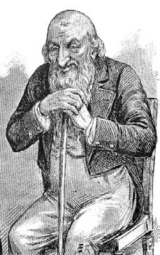
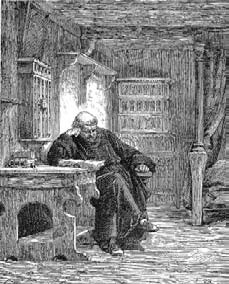

24 Mart 1897
Bir Alman (ya da Avusturya, hiç fark etmez) Yahudisinin emriyle –haşa! önerisiyle diyelim– yazmaya girişmekle sanki ruhumu bütün çıplaklığıyla ortaya koyuyormuşum gibi hissettiğim için utanıyorum. Ben kimim? Belki de kendimi hayatımın olayları değil de tutkularım konusunda sorguya çeksem daha yararlı olur. Kimi seviyorum? Aklıma sevilen yüzler gelmiyor. İyi yemeği sevdiğimi biliyorum: La Tour d'Argent lokantasının adını anarken bile bütün bedenimin titrediğini hissediyorum. Ya aşk?
Kimden nefret ediyorum? Yahudilerden, demek geliyor içimden ama o Avusturyalı (ya da Alman, hiç fark etmez) doktorun kışkırtmasına böylesine uysallıkla boyun eğiyor olmam, lanet olası Yahudilere karşı olmadığımı gösteriyor.
Yahudiler hakkında bildiğim tek şeyi bana dedem öğretti: "En üstün derecede tanrıtanımaz olan halk onlardır" derdi bana. "İyiliğin ahirette değil burada gerçekleştirilmesi gerektiğinden yola çıkarlar. Bu nedenle sadece bu dünyanın fethi için çalışırlar."
Çocukluk yıllarım onların hayaletleri yüzünden kötü geçti. Dedem onların insanı morartacak kadar sahte bakışlarla karşısındakini gözetleyen gözlerini, yılışık gülümsemelerini, dişlerinin üzerinde yükselen sırtlan dudaklarını, ağır, hastalıklı, hayvansı bakışlarını, burun ve dudak arasındaki daimi huzursuz, nefretle oyulmuş kıvrımlarını, güney kuşlarının gagasını andıran burunlarını anlattı durdu... Ve göz, ah göz... Kızarmış ekmek rengindeki gözbebeğinin içinde ateşli biçimde dönüyor ve on sekiz yüzyıllık nefretin ürettiği salgı yüzünden bozulan karaciğerin hastalığını ele veriyor; yaşla artan binlerce küçük çizgiye doğru eğiliyor; Yahudi dediğin yirmi yaşında pörsür zaten. Gülümsediği zaman şiş göz kapakları belli belirsiz bir çizgi kalana dek kapanır; başkaları bunu kurnazlık işareti olarak yorumlar ama dedem abazanlık olarak nitelendirirdi... Anlayacak kadar büyüdüğümde bana Yahudi'nin İspanyol kadar kibirli olmanın yanında Hırvat gibi cahil, Levanten gibi açgözlü, Maltalı gibi nankör, Çingene gibi küstah, İngiliz gibi pis, Kalmuk gibi ikiyüzlü, Prusyalı gibi buyurgan, Astili gibi dedikoducu olmasının yanı sıra aşırı şehvet yüzünden dizginlenemeyen bir zâni olduğunu söylemişti: zinaya düşkünlüğün nedeni ereksiyonu kolaylaştıran sünnetti; Yahudi'nin cücemsi bedenine oranla yarı yarıya budanmış çıkıntının tonajı ağırdı!
Ben, uzun yıllar boyunca, her gece rüyamda Yahudileri gördüm.

Ben, uzun yıllar boyunca, her gece rüyamda Yahudileri gördüm.
Şans eseri, delikanlıyken –iki laftan fazlasını etmediğim– Torino gettosundaki fahişe ve Avusturyalı (ya da Alman, hiç fark etmez) doktor dışında hiçbir Yahudi'yle karşılaşmadım.
Almanları tanıdım ve hatta onlar için çalıştım: İnsanlığın akla hayale sığacak en basit düzeyindedirler. Bir Alman ortalama olarak bir Fransız'ın ürettiğinin tam iki katı dışkı üretir. Beyin üretiminin tersine aşırı bağırsak üretimine sahip olmaları onların fizyolojik geriliğini gösterir. Barbar işgalleri döneminde Germen halkı yollara inanılmaz dışkı yığardı. Zaten geçen yüzyıllarda bile Fransız seyyahlar Alzas sınırını geçtiklerini, yollara bırakılmış dışkıların anormal fazlalığından anlarlarmış. Bu da yetmez: Almanların çok tipik bir özelliği bromidroz yani terin kötü kokmasıdır; ayrıca bir Almanın idrarı yüzde yirmi oranında azot içerir; oysa bu oran öteki ırklarda yüzde on beştir.
Alman, aşırı biçimde tükettiği bira ve oburca yuttuğu domuz sosisleri yüzünden sürekli bağırsak huzursuzluğu içinde yaşar. Monaco'ya yaptığım yegâne yolculuk sırasında bir akşam onları, o kutsallık taşımayan ama adeta katedral gibi taptıkları yerlerin birinde gördüm: Mekân bir İngiliz limanı gibi dumanlıydı, domuz yağı kokuyordu ve o ikisi, o kadın ve erkek, ellerinde sığır sürüsünü doyuracak bira bardaklarıyla, koklaşan iki köpek misali, burun buruna hayvani bir sevda diyaloğuna girmişlerdi; gürültülü ve sevimsiz kahkahalarıyla, boğuk gırtlak nağmeleriyle, cildine zeytinyağı sürmüş antik sirk sporcuları gibi yağdan parlayan yüzleri ve kollarıyla dikkatimi çektiler.
Ruh anlamına gelen Geist'larının ağzını dolduruyorlar ama bu, onları gençlikten itibaren sersemleten ve Ren'in ötesinde, iğrenç suratları yansıtan tablolar ve ölesiye can sıkıcı şiirler dışında sanat adına neden ilginç bir şey üretilmediğini açıklayan biranın ruhu. Müzik konusunu hiç açmayalım: Bugün Fransızları bile aptala çeviren gürültücü ve cenazelere layık Wagner'den söz etmiyorum ama işittiğim pek azını göz önüne alarak söyleyebilirim ki, Bach'ın besteleri bütünüyle armoniden yoksun, bir kış gecesi gibi soğuktur; Beethoven'in senfonileri ise kaba bir cümbüşten ibarettir.
Aşırı bira tüketimi yüzünden bayağılıklarının farkında değildirler ama bayağılığın daha da üstünde, Alman olmaktan utanç duymazlar. Luther gibi obur ve kösnül bir rahibi (bir rahibeyle evlenilebilir mi?) ciddiye almışlardır ve bunun da tek nedeni Luther'in Kitabı Mukaddes'i onların diline tercüme ederek mahvetmiş olmasıdır. Avrupa'nın en büyük iki uyuşturucusunu yani alkolü ve Hıristiyanlık'ı aşırı kullandıklarını söyleyen kimdi?

Luther gibi obur ve kösnül bir rahibi (bir rahibeyle evlenilebilir mi?) ciddiye almışlardır ve bunun da tek nedeni Luther'in Kitabı Mukaddes'i onların diline tercüme ederek mahvetmiş olmasıdır.
Kendilerinin pek derin olduklarını sanırlar, çünkü dilleri pek bulanıktır, Fransız dilinin duruluğuna sahip değildir ve asla tam olarak amaçladığını ifade edemez; öyle ki hiçbir Alman tam olarak ne söylemek istediğini bilemez –ve bu belirsizliğini derinlikle karıştırır. Almanlarla da aynen kadınlarla yaşanan yaşanır: Asla konunun özüne varılamaz. Ne yazık ki dedem daha çocukken, okurken asla gerektiği yerde bulunmadıkları için gözlerinle telaşla araştırman gereken fiilleriyle bu anlamsız dili öğrenmeye mecbur etti beni– bunda şaşıracak bir şey yok, çünkü o bir Avusturya yanlısıydı. Ve ben bu dilden de, parmaklarıma sopayla vurarak öğretmeye çalışan Cizvit'ten de nefret ettim.
Gobineau denen o şahıs ırklar arasındaki eşitsizlik hakkında yazdığından beri bana öyle geliyor ki, eğer birisi bir başka halka ilişkin olumsuz sözler söylüyorsa, bunun nedeni kendi halkını üstün görmesindendir. Benim önyargılarım yoktur. Fransız olduğumdan beri (annemden dolayı zaten yarı yarıya öyleydim) yeni yurttaşlarımın ne kadar tembel, dalavereci, kindar, kıskanç, Fransız olmayan herkesin vahşi olduğunu sanacak kadar abartılı bir biçimde kendini beğenmiş ve azarlanmayı da asla kabullenemeyen insanlar olduklarını anladım. Ama bir şey daha anladım: Bir Fransız'ın türüne ilişkin bir hatayı kabullenmesini sağlamak için bir başka halk hakkında kötü sözler söylemek yeterlidir; örneğin, "Biz Lehler şu ya da bu kusura sahibiz" derseniz, bu berbat bir şey bile olsa hiç kimseden geride kalmak istemedikleri için hemen şöyle bir tepki verirler: "Ah hayır, biz burada, Fransa'da daha beteriz"; işte o zaman tuzağa düşürüldüklerinin farkına varmadan Fransızları yerin dibine batırırlar.
Bundan bir çıkarları olsa bile kendi benzerlerini sevmezler. Kimse bir Fransız meyhaneci kadar edepsiz olamaz, müşterilerinden nefret eder gibidir (belki de öyledir) ve sanki var olmalarından hiç hoşlanmaz (bu yalandır, çünkü Fransızlar müthiş açgözlüdürler). Ils grognent toujours. Hele onlara bir şey sormayı deneyin: Sais pas, moi diyerek dudaklarını gaz çıkartır gibi öne uzatarak yanıtlarlar.
Kötü yüreklidirler. Can sıkıntısını gidermek için can alırlar. Uzun yıllar yurttaşlarını birbirlerinin kellesini kesmekle oyalayan tek ulus onlardır; neyse ki Napolyon öfkelerini başka ırklar üzerine yöneltmiş ve bütün Avrupa'yı yok etmek üzere ulusları sıraya dizmiştir.
Kudretli olduğunu söyledikleri bir devlete sahip olmakla övünürler ama bunu yerle bir etmek için de ellerinden geleni yaparlar: Her türlü neden ve her esen rüzgâr yüzünden devrim yapmak konusunda kimse Fransızların eline su dökemez; çoğu zaman nedenini bile bilmeden, sokaktaki sefil ayaktakımı güruhuna katılırlar. Fransız ne istediğini hiç bilemez; mükemmelen bildiği tek şey elindekini istemediğidir. Ve bunu dile getirmek için de şarkı söylemekten başka bir şey yapmaz.
Bütün dünyanın Fransızca konuştuğunu zannederler. On yıl önce Lucas ile, o dâhi adamla, öyle oldu – bu adam Bibliothèque Nationale'deki eski kitapların son sayfalarını kesip çalarak, farklı kaligrafileri taklit ederek otuz bin sahte imzalı belge yarattı: ben daha iyisini yapardım... Bunların büyük bir bölümünü, gayet yüksek bir fiyata Chasles denen o budalaya (büyük matematikçi ve Bilimler Akademisi üyesi olduğu söyleniyor ama gene de hödük) sattı. Sadece o değil, akademi dünyasındaki pek çok dostu, Caligula'nın, Kleopatra'nın ya da Sezar'ın mektuplarını Fransızca yazmış olmalarını hayra yordular; Pascal, Newton ve Galileo'nun birbirleriyle Fransızca yazıştığına inandılar, oysa o dönemin bilimadamlarının Latince yazıştığını çocuklar bile bilir. Fransız aydınları başka ulusların Fransızca dışında bir dil konuştuğu hakkında fikir sahibi değillerdi. Öte yandan bu sahte mektuplarda Pascal'in yerçekimini Newton'dan yirmi yıl önce bulduğu yazıyordu ki bu da ulusal övünce yenik düşen Sorbonne'luların gözlerini kamaştırmaya yetiyordu.
Cehaletleri belki de pintiliklerinin sonucudur – bu ulusal kusuru erdem olarak kabul ettikleri için ona tutumluluk adını verirler. Konunun bütünüyle bir cimrinin etrafında dolaştığı tek komedi bu ülkede yazılmıştır. Grandet Baba'yı saymıyorum bile.
Cimrilikleri tozlu evlerinden, asla yenilenmeyen döşemeliklerinden, atalarından kalmış hamam küvetlerinden, zaten az olan yeri daha da idareli kullanmak için yaptıkları eften püften sarmal merdivenlerinden de bellidir. Aynen ağaçlara yapıldığı gibi, bir Fransız'ı bir Yahudi'yle (hatta Alman kökenlisiyle) aşılarsanız şu anda sahip olduğumuz şeyi yani Üçüncü Cumhuriyet'i elde edersiniz...
Ben Fransız olmayı seçtiysem, bunu İtalyan olmaya katlanamadığımdan yaptım. Bir (doğuştan) Piemonteli olarak horoz karikatüründen başka bir şey olmadığıma inanıyordum ama görüşlerim bir horozunkinden daha dardı. Piemonteliler her türlü yenilik karşısında gerim gerim gerilirler, beklenmedik her şey onları dehşete düşürür; İki Sicilya Krallığı'na uzanmaları için (ama Garibaldi'nin askerleri arasında çok az Piemonteli vardı) iki Liguryalıya, Garibaldi gibi bir fanatik, Mazzini gibi bir düztaban gerekliydi. Palermo'ya gönderildiğimde keşfettiklerimi hiç anlatmayayım (bu ne zamandı? toparlamalıyım). Sadece Dumas denen o kasıntı severdi bu halkları; bunun nedeni belki de dalkavukluklarıydı, çünkü ona melez gözüyle bakan Fransızlardan pek yüz bulamazdı. Napolililer ve Sicilyalılar ondan hoşlanırlardı, çünkü kendileri de fahişe bir annenin hatası yüzünden değil, güvenilmez Levantenlerin, terli Arapların, sapık Ostrogotların tarih içindeki buluşmasından oluşmuş yarı beyaz yarı siyah bir halktı; üstelik kırma atalarının her birinin en berbat özelliklerini, bedevilerin uyuşukluğunu, kuzeylilerin vahşiliğini, Yunanlıların yararsızlığını ve kılı kırk yararcasına yaptıkları çenebazlıklarını almışlardı. Spagettileri parmaklarıyla gırtlaklarına sokuşturarak, çürük domates sosunu üzerlerine bulaştırarak yabancıları kendilerine hayran bırakan Napoli'nin sokak çocuklarını görmek yeter. Sanırım ben görmedim onları, ama biliyorum.
İtalyan güvenilmez, yalancı, kalleş, haindir; kılıçtansa hançerle kendini daha rahat hisseder; ilaç yerine zehri seçer, pazarlıkta kaypaktır, ancak her esen rüzgâra göre bayrak değiştirme konusunda tutarlılık gösterir – Garibaldi'nin maceraperestleri ve Piemonteli generaller görünür görünmez Bourbon generallerinin başına ne geldiğini gözlerimle gördüm.
Hıristiyanlık kadim ırkın gururunu yerle yeksan ettiği için barbarlar tarafından cinsel sapıklığa maruz kalan son sapık Roma imparatorundan sonra, İtalyanlar yegâne gerçek hükümetlerini rahipleri model alarak kurdular.
Rahipler... Onları nasıl tanıdım? Sanırım dedemin evinden, o kaçamak bakışları, bozuk takma dişleri, ağır kokulu solukları, ensemi okşamaya çalışan terli elleri bulanık bir anı olarak hatırlıyorum. Ne iğrençti. Bu aylaklar, hırsızlar ve berduşlar gibi tehlikeli bir sınıfa aittirler. İnsan miskinlik etmek için papaz ya da rahip olur; miskinlik sayılarınca garantidir. Söz gelişi bin candan biri rahip olsa o kadar çok işleri olur ki, yan gelip yatmaya ve horoz tıkınmaya vakitleri kalmaz. Hükümet en yakışıksız rahipler içinden en sersemlerini seçer ve onları piskopos yapar.
Doğar doğmaz seni vaftiz ettiklerinde onlarla karşılaşırsın, anne ve baban seni onlara emanet edecek kadar sofuysa okula gittiğinde gene burun buruna gelirsin; sonra ilk komünyon, din eğitimi, vaftizin pekiştirilmesine gelir sıra; düğün gecesi odada ne yapman gerektiğini söyleyen bir rahiptir; ertesi gün günah çıkarma penceresinin arkasından, keyiflenebilmek için kaç kez yaptığını soran gene o. Cinsellikten dehşet içinde söz ederler ama her gün bir başka zina yatağından çıktıklarını görürsün; ellerini bile yıkamadan rablerinin etini yiyip kanını içmeye, daha sonra da bunu dışkılamaya ve işemeye giderler.
Krallıklarının bu dünya olmadığını yineleyip dururlar, gene de elleri araklayabilecekleri her şeye uzanır. Son kilisenin son taşı son rahip üzerine yıkılana kadar, uygarlık yetkinliğe ulaşamayacaktır; yeryüzü ancak o zaman bu soydan kurtulacaktır.
Komünistler, dinin halkların afyonu olduğu görüşünü yaymışlardır. Doğrudur, çünkü kulların heveslerini frenleyen odur; din olmasaydı barikatların üzerinde iki kat insan olurdu; oysa Komün günlerinde yeterli sayıda değillerdi ve fazla beklemeye gerek kalmadan onlardan sıyrılmak mümkün oldu. O Avusturyalı hekimin Kolombiya uyuşturucusunun yararları hakkında söylediklerini duyduktan sonra, dinin aynı zamanda halkların kokaini olduğunu söyleyebilirim, çünkü din savaşlara, kâfirlere kıyım uygulanmasına itmiştir ve itmeyi sürdürmektedir; bu Hıristiyanlar, Müslümanlar ve başka müminler için geçerlidir ve eğer Afrika zencileri kendi aralarında kıyım yapmakla yetiniyorlarsa, misyonerler onları Hıristiyan yapmıştır ve cephede ilk safta ölmeye, bir kente girildiğinde beyaz kadınlara tecavüz etmeye son derece uygun sömürge orduları şekline sokmuşlardır. İnsanoğlu dinsel inanç söz konusu olmadığında asla böyle büyük ve heyecanlı bir kötülük sergilemez.
Hepsinin en beteri kesinlikle Cizvitlerdir. Sanki onlara bir oyun oynamışım gibi bir his var içimde; belki de onlardır benim canımı yakmış olan; hâlâ tam olarak hatırlayamıyorum. Belki de onların tensel kardeşleri masonlardı beni hırpalayan. Masonlar da Cizvitler gibidir, yalnızca zihinleri daha bulanıktır. Cizvitlerin en azından kendi teolojileri vardır ve bunu nasıl idare edeceklerini bilirler; oysa ötekilerin birden fazla olduğundan kafaları karışır. Masonlardan bana söz eden dedemdi. Onlar Yahudilerle bir olup kralın kafasını kesmişler. Ve Carbonari'yi yaratmışlar; bunlar masonların biraz daha aptal olanlarıdır, çünkü bir keresinde üzerlerine ateş açılmasına izin verdiler ve sonra da bir bombayı hatalı imal ettikleri için kellelerinin uçurulmasına yol açtılar ya da sosyalist, komünist ve komüncü oldular. Hepsi kurşuna dizildi. Aferin Thiers.
Masonlar ve Cizvitler. Cizvitler kadın gibi giyinen masonlardır.